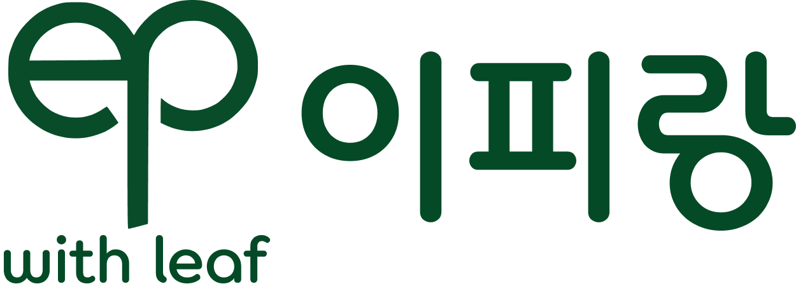
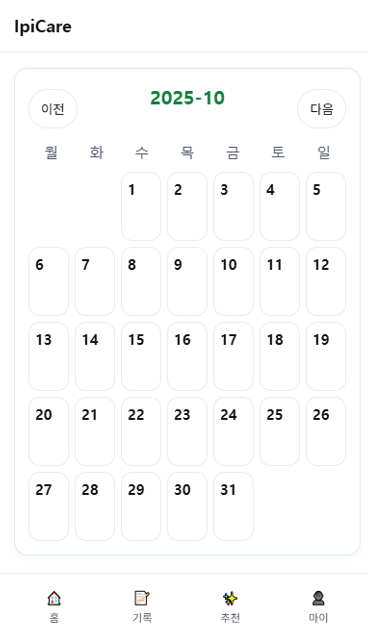

개인 설문 기반 맞춤 모종 구독
신선한 잎채소·허브를 당신의 루틴에 맞춰 제안하고 공급합니다.
단순 배송이 아닌 목표와 생활패턴을 반영한 개인 맞춤형 구독입니다.


1분의 설문으로 시작하는 개인 맞춤 모종 구독 서비스
내 생활 패턴에 꼭 맞는 허브와 잎채소를 제안받고, 집에서도 나만의 루틴을 만들어보세요.
신선한 잎채소·허브를 당신의 루틴에 맞춰 제안하고 공급합니다.
단순 배송이 아닌 목표와 생활패턴을 반영한 개인 맞춤형 구독입니다.
매일 캘린더에 하루 상태를 기록하면,
주간 통계를 기반으로 나만의 인사이트가 만들어집니다.
몸무게, 걸음수, 물 섭취 등 데이터를 시각적으로 한눈에 확인해보세요.

기기가 아닌 허브·잎채소 자체에 집중하여 자연 그대로의 웰니스를 전합니다.
생활습관과 선호도를 반영해 최적의 개인 맞춤 조합을 추천합니다.
정기 공급되는 라이브 플러그로 매주 새로운 싱그러움을 이어갑니다.